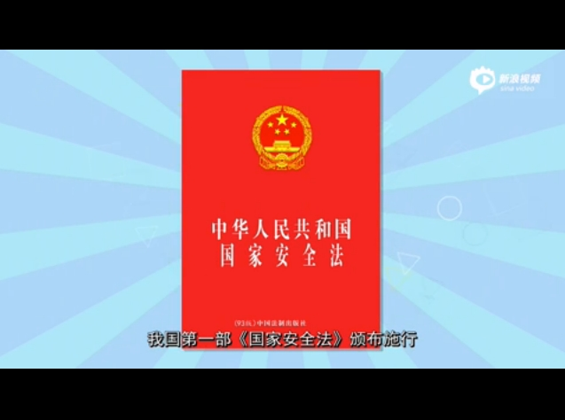
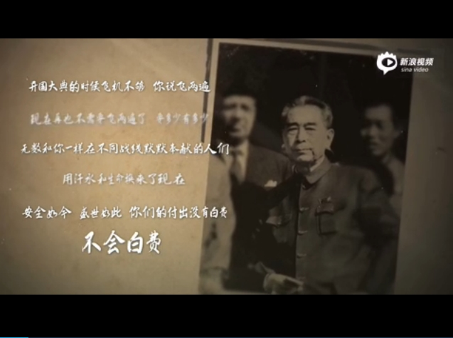
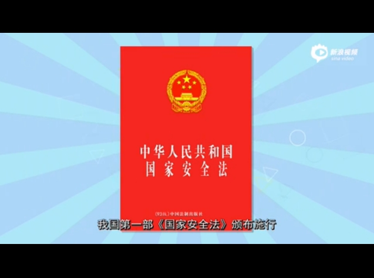
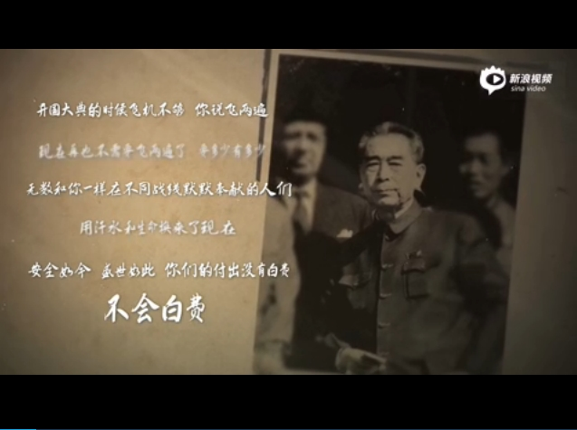

2015年7月1日，全国人大常委会通过的国家安全法规定，国家加强国家安全新闻宣传和舆论引导。将国家安全教育纳入国民教育体系和公务员教育培训体系，增强全民国家安全意识。每年4月15日为全民国家安全教育日。今天，是首个“全民国家安全教育日”。
 



习近平在首个全民国家安全教育日作出重要指示
习近平在首个全民国家安全教育日作出重要指示习近平在首个全民国家安全教育日作出重要指示习近平在首个全民国家安全教育日作出重要指示
关于国家安全法你知道多少？
《中华人民共和国国家安全法》从政治安全、国土安全、军事安全、经济安全、文化安全、社会安全、科技安全、生态安全等11个领域对国家安全任务进行了明确。
媒体聚焦
新华社：新国家安全法：4月15日为全民国家安全教育日
据新华社电 十二届全国人大常委会第十五次会议昨日表决通过了新的国家安全法。国家主席习近平签署第29号主席令予以公布。法律对政治安全、国土安全、军事安全、文化安全、科技安全等11个领域的国家安全任务进行了明确，自公布之日起施行。新国家安全法将每年4月15日定为全民国家安全教育日，通过多种形式开展国家安全宣传教育活动。
法制网：新《国家安全法》：“总体国家安全观”的法律化
2016年4月15日是《国家安全法》颁布实施以来的首个全民国家安全教育日。去年4月15日，习近平总书记在国家安全委员会第一次会议上指出，“当前我国国家安全内涵和外延比历史上任何时候都要丰富，时空领域比历史上任何时候都要宽广，内外因素比历史上任何时候都要复杂”，在这种“总体国家安全观”的思想指导下，国家制定颁布了新的国家安全法。
中国青年网：期待“国家安全意识”成为公众习惯

今年4月15日，是国家安全教育的特殊时间节点，在这一值得关注和重视的首个中国国家安全教育日，重温国家安全主题，强化公民使命，富有现实意义。国家安全关系每一个人，没有国家的安全，难言公民个体的安全与保障。公众也深有体会，在一些国家频频发生暴恐事件，严重威胁国家安全，同时也直接威胁到公民个体安全。反之，国家安全有保障，则社会安宁稳定，公众安全幸福指数就高。